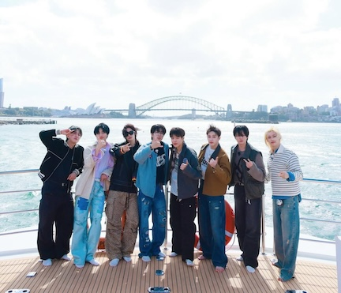
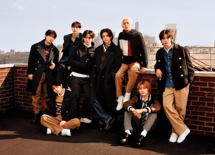

Stray Kids and Their Music
About Them
Hey there! Let me tell you about Stray Kids, an amazing eight-member South Korean
boy band from JYP Entertainment. The group is made up of Bang Chan, Lee Know, Changbin,
Hyunjin, Han, Felix, Seungmin, and I.N. They first burst onto the scene in 2018 with their
catchy song "District 9" from their EP *I Am Not*. What's really cool is that Bang Chan,
who is the oldest member and trained the longest at JYP, handpicked each member to join him
on this exciting journey!
At first, there were nine members during a survival show, but in October 2019, one member
decided to leave for personal reasons.
Stray Kids is super special because they mainly produce their music themselves! They have
an awesome production team called 3Racha, made up of Bang Chan, Changbin, and Han. The other
members also jump in on songwriting to add their own flair.
As for their name, "Stray Kids" started out as a metaphor for a lost child chasing their
dreams. Over time, it has grown to symbolize the idea of finding a way out of the ordinary
together.
In 2020, Stray Kids excitedly made their Japanese debut with awesome Japanese versions of
"My Pace," "Double Knot," and "Levanter." They then released their very first full Japanese
single, "Top," along with the catchy B-side, "Slump." Both of these tracks were featured in the
anime "Tower of God," with "Top" serving as the opening theme and "Slump" as the ending theme.
Plus, fans were thrilled when a Korean version of "Top" came out on May 13, followed by an English
version on May 20. These days, you can enjoy most of their songs in Korean and Japanese, and there
are even a few in English!
Stray Kids are taking the world by storm! They’ve snagged some amazing awards, including the Top
Global K-pop Artist at the Billboard Music Awards in 2024. In 2023, they won the MTV Video Music
Award for Best K-pop, and this year, they were recognized with the People’s Choice Award for Group/Duo
of the Year and the iHeartRadio Music Award. Plus, they received a Grammy nomination for Best Compilation
Soundtrack for Visual Media for their awesome song "SLASH," featured on the Deadpool & Wolverine soundtrack.
About Their Music
Stray Kids is an exciting K-pop group that also loves to mix in hip-hop and electronic vibes! Their music pulls
inspiration from a variety of genres, such as hip-hop, dubstep, heavy metal, electroclash, and dance-pop, resulting
in a sound that’s both unique and adventurous. Many describe their songs as "dark and experimental," which adds to
their charm.
You might enjoy tracks like "LALALALA," "S-Class," and "Social Path," but don't forget to check out their softer,
more emotional tunes like "Silent Cry," "Close," and "Sorry, I Love You" as well.
What’s really cool is that Stray Kids often dive into themes of identity, love, and heartbreak in their music.
Plus, they have the talent and creativity to produce their own songs, making their artistry even more special!
List of Some Their Music
- Energetic Music
- Emotional Music
Each Member
| Name | Nationality | Position (s) | Birthday |
|---|---|---|---|
| Christopher Chahn Bahng AKA Bang Chan | Korean-Australian | Leader, Producer, Vocalist, Dancer, Rapper | October 3rd, 1997 |
| Lee Min-ho AKA Lee Know | Korean | Dancer, Vocalist, Rapper | October 25th, 1998 |
| Seo Chang-bin AKA Changbin | Korean | Rapper, Vocalist, Producer | August 11th, 1999 |
| Hwang Hyun-ji AKA Hyunjin | Korean | Dancer, Rapper, Vocalist, Visual | March 20th, 2000 |
| Han Ji-sung AKA Han | Korean | Rapper, Vocalist, Producer | September 14th, 2000 |
| Felix Lee AKA Felix | Korean-Australian | Dancer, Rapper, Vocalist | September 15th, 2000 |
| Kim Seung-min AkA Seungmin | Korean | Vocalist | September 22nd, 2000 |
| Yang Jeong-in AKA I.N. | Korean | Vocalist, Maknae (meaning the youngest in Korean) | February 8th, 2001 |
Images
 